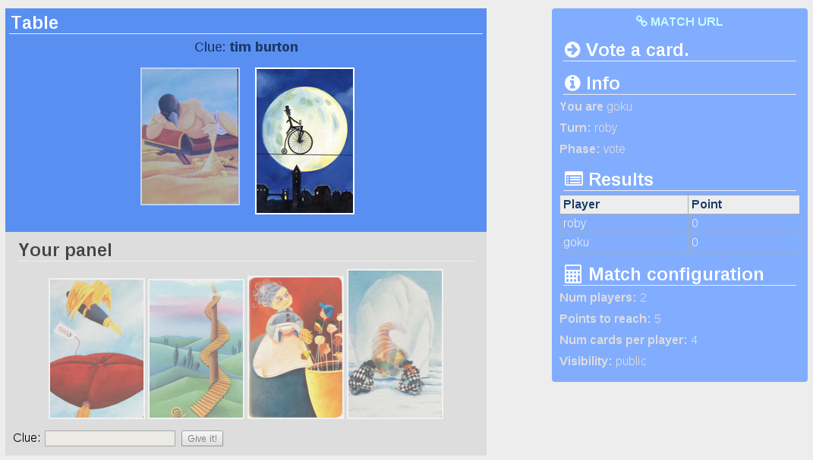
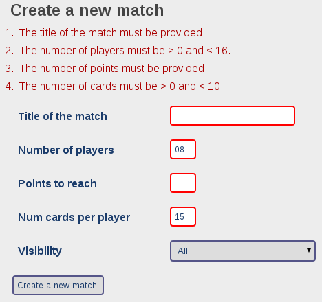

Progetto per il corso di Applicazioni e Servizi Web, a.a. 2014-2015.
Lo scopo del sito è quello di consentire ai suoi utenti di giocare al gioco Dixit. Si tratta di un gioco multi-player a punti dove vengono usate carte figurate particolarmente evocative per stimolare l'intuito e l'arguzia dei partecipanti.
Il sito fornisce supporto, una volta che ci si è registrati e successivamente autenticati, per la creazione di partite, l'accesso a partite create da altri utenti, e il gioco vero e proprio, attraverso un'opportuna interfaccia web.
Il sito è accessibile in diversa misura alle seguenti categorie di utenti:
La computazione lato client è rappresentata essenzialmente da una Rich Internet Application (RIA) sviluppata in JavaScript. Essa costituisce il front-end di gioco e fornisce ai giocatori la possibilità di compiere azioni di gioco e di ricevere notifiche relative all'evoluzione della partita in corso.
La computazione lato server consiste in servlet Java e pagine JSP che collettivamente forniscono le seguenti funzionalità.
Inoltre, si fa uso di un servizio web XML-over-HTTP implementato tramite servlet asincrona per realizzare la logica di gioco e gestire le notifiche push da client a server , implementate con la tecnica Comet BOSH (Bi-directional-streams Over Synchronous HTTP).
Per quanto riguarda le informazioni memorizzate sul server, abbiamo:
Mentre le informazioni scambiate in rete includono, al di là dei dati delle form e dei dati recuperati lato-server, i documenti XML (messaggi) che viaggiano tra la RIA JavaScript e il servizio web, vale a dire: le azioni di gioco, i risultati delle azioni di gioco, e lo stato delle partite.
Il sito è realizzato con architettura Model-View-Controller (MVC).
Il pattern MVC è implementato nella seguente modalità:
L'approccio 1-servlet-per-azione differisce da quello impiegato in framework come Rails o ASP.NET MVC dove si hanno classi di tipo "Controller" e i metodi esposti rappresentano le azioni.
Un vantaggio consiste nel fatto che ad ogni classe servlet viene associata una ben precisa responsabilità, che ne semplifica la comprensione. (Single Responsibility Principle (SRP)).
La RIA JavaScript fa uso della libreria Knockout per realizzare il pattern Model-View-ViewModel (MVVM).
L'accesso ai dati (database XML) da parte dei controller/servlet è mediato attraverso il pattern Repository. Inoltre, il repository delle carte è stato gestito in modalità cached utilizzando il pattern Singleton per garantire l'accesso a un'unica istanza del repository.
La logica relative a query complessi ai dati è incapsulata all'interno di classi Manager.
In questo modo, i controller vengono semplificati in quanto gli è stata tolta la responsabilità di eseguire query particolarmente elaborate. Si tratta di un'applicazione del principio Keep It Simple Stupid (KISS). Questa caratteristica diventa più importante quando la complessità dei controller cresce.
Essendo la parte di autorizzazione un "crosscutting concern", la logica di controllo che solo gli utenti autenticati possano accedere alle parti del sito riservate agli iscritti è stata centralizzata in un solo punto mediante servlet filter.
Come da specifiche di progetto, il database degli utenti è gestito utilizzando DOM parsing. La tecnica XML DOM è inoltre utilizzata nella costruzione e decodifica dei messaggi XML (sia lato client sia lato server). Per esercizio, si è inoltre implementato il database delle carte utilizzando Java Architecture for XML Binding (JAXB).
E' stato quindi possibile valutare entrambe le tecniche ed apprezzare l'approccio dichiarativo di JAXB e la gestione del mapping automatico da oggetti Java ad XML e viceversa.
Il gioco è implementato mediante una RIA JavaScript che invia e riceve messaggi XML attraverso chiamate asincrone AJAX.
Per prima cosa, viene istanziato il View Model, cioè il modello della vista di gioco, che deve fornire:
Il View Model è stato costruito avvalendosi della libreria Knockout JS, che fornisce un supporto per la creazione di proprietà osservabili e per la definizione dei binding di tra quest'ultime e gli elementi grafici dell'interfaccia web (markup e stile).
L'utilizzo di questa libreria è importante in quanto è essa che si occupa di mantanere sincronizzati il View Model e la View, rilevando automaticamente le modifiche alle proprietà osservabili, e notificando/propagando tali cambiamenti agli osservatori di interesse.
Infatti, se non si fosse usato Knockout JS, si sarebbe dovuto inserire, nel codice JavaScript che realizza la logica client-side del gioco, del codice finalizzato ad aggiornare gli elementi della vista con i nuovi dati ricevuti. Quindi il codice sarebbe stato "mischiato" alla logica di sincronizzazione modello-vista e avrebbe anche incorporato una dipendenza indesiderata verso gli elementi grafici della View.
Quindi, Knockout JS ha portato i seguenti vantaggi:
Tra gli svantaggi, piuttosto trascurabili in questo caso, ricordiamo il fatto di dover imparare ad utilizzare una nuova libreria.
In questa applicazione, il View Model consiste in:
Molte di queste informazioni sono facilmente ritrovabili, senza guardare al codice, nel seguente screenshot.
L'entry point per le azioni di gioco è la funzione performAction() che accetta il nome dell'azione da eseguire e i dati da allegare alla richiesta, ed effettua una chiamata AJAX al servizio web che opera via XML-over-HTTP.
In questa funzione, ogni azione che può essere eseguita è abilitata sulla base dell'ultimo stato noto della partita (la distribuzione implica l'impossibilità di una consistenza immediata). Questi controlli sono comunque replicati anche lato server.
Le azioni che possono essere effettuate da un giocatore sono:
Ognuna di queste azioni viene rappresentata da un opportuno documento XML, la cui costruzione è incapsulata in apposite funzioni JavaScript. Questi messaggi XML, una volta costruiti, sono forniti come dati alle richieste POST effettuate al servizio web di gioco, il quale risponderà con ulteriori messaggi XML sulla base dell'esito delle azioni.
Quando le richieste AJAX vengono completate con successo, delle callback sono chiamate per gestire l'evento. In queste callback, la reazione consiste nell'aggiornare il front-end sulla base dell' informazione ricevuta e dell'esito dell'azione eseguita.
La funzione che si occupa di aggiornare lo stato del gioco è syncWithGameInfo(). Essa popola e imposta le proprietà del View Model (vedi sopra) in base alle informazioni ottenute. Per fare ciò, i documenti XML sono parsati con tecnica DOM XML.
Un aspetto molto importante nello sviluppo della parte client-side è la scrittura di codice cross-browser, cioè codice che funziona allo stesso modo (o che degrada dolcemente) indipendentemente dal browser utilizzato dall'utente.
In quest'ottica, e anche per ragioni di produttività, si è ritenuto opportuno utilizzare la popolare libreria JQuery, che fornisce uno strato intermedio e funzioni di utilità che schermano lo sviluppatore da problematiche (storicamente) ricorrenti nello sviluppo in JavaScript.
Il codice server-side è così organizzato in packages
Come già detto precedentemente, l'applicazione web ha un'architettura MVC. Le servlet Java fungono da controller. Esse vengono invocate quando la richiesta HTTP originata dall'utente fa match con il corrispondente URL pattern. In quanto controller, le servlet recuperano i dati dal modello e restituiscono la vista appropriata alla richiesta: questo, in particolare, è realizzato mediante forwarding a pagina JSP.
Le pagine JSP sono salvate sotto /WEB-INF/jsp/*.jsp cosicché non sia possibile accedervi direttamente. In questo modo occorre sempre passare dai controller.
Le servlet sono definite sotto asw1022.controllers e organizzate in sotto-package sulla base della macro-funzionalità che contribuiscono a creare:
Le seguenti pagine JSP sono state definite:
Alcuni JSP fragment sono stati creati per essere riusati in diverse pagine JSP. Qui l'esigenza era di limitare la duplicazione del codice, centralizzando in file separati le parti comuni a tutte le pagine del sito. In particolare, questo meccanismo è stato utilizzato per realizzare un layout uniforme.
I frammenti JSP sono i seguenti (definiti in /WEB-INF/jspf/*.jspf):
Con tale organizzazione, le pagine del sito possono essere definite nel modo seguente:
<%@page contentType="text/html" pageEncoding="UTF-8"%>
<!DOCTYPE html>
<html>
<head>
<title>Titolo pagina</title>
<%@ include file="/WEB-INF/jspf/head.jspf" %>
<!-- QUI, EVENTUALMENTE, ULTERIORI SCRIPT/CSS -->
</head>
<body>
<%@ include file="/WEB-INF/jspf/prologue.jspf" %>
<!-- ***************************** -->
<!-- QUI IL CONTENUTO DELLA PAGINA -->
<!-- ***************************** -->
<%@ include file="/WEB-INF/jspf/epilogue.jspf" %>
</body>
</html>
Quando una form è inviata (ad es., per registrazione utente o login), oltre alla validazione client-side implementata in JavaScript, viene effettuata anche una validazione server-side in quanto la prima può essere facilmente scavalcata e rappresenta quindi una misura insufficiente per garantire la correttezza/integrità dei dati.
Oltre all'enforcement dei vincoli di validazione dei dati inseriti (ad es., il match delle due password inserite in fase di registrazione) e delle informazioni da registrare sul server (ad es., dati utente o dati sulle partite), si vuole fornire all'utente un feedback in merito agli errori di compilazione delle form.
A questo scopo, le servlet sono state tipicamente strutturate in modo da prendere decisioni diverse in merito al forwarding delle pagine JSP sulla base del risultato delle azioni richieste. Gli errori sono passati alla pagina JSP che contiene la form come lista di oggetti ValidationError allegata alla richiesta (come attributo). Questi oggetti i quali incapsulano un messaggio di errore ed eventualmente il campo di input a cui sono associati.
A questo punto, torna utile il fragment form_errors.jspf, che riporta gli errori come lista HTML e, tramite codice JavaScript generato dinamicamente, cambia lo stile degli input field compilati erroneamente.
Un esempio del risultato è fornito dal seguente screenshot:
La servlet asw1022.services.Dixit è il servizio web XML-over-HTTP che implementa la logica di gioco. Si tratta di una servlet asincrona (asyncSupported=true) in quanto si vuole supportare la tecnica Comet del long-polling (BOSH): quando l'utente fa polling, se non ci sono dati da restituire al momento, la servlet "sospende" la richiesta corrente rendendola asincrona.
Per ogni utente, la servlet tiene traccia del "contesto", rappresentato da un'istanza della classe UserAsyncContext, che incapsula l'oggetto AsyncContext e una coda di documenti DOM XML.
Il servizio fornisce le seguenti operazioni:
Le seguenti informazioni sono memorizzate sul server come database XML.
Nota: per ragioni di sicurezza la password non è memorizzata in chiaro, ma il suo hash SHA-256. In questo modo, nemmeno gli amministratori del sito possono accedere alle password degli utenti.
I file XML Schema che descrivono la struttura dei suddetti file XML sono i seguenti (sotto /xml-types/db/):
Le partite, invece, sono memorizzate in memoria condivisa tra le servlet come attributo del ServletContext. Le partite andranno quindi perse ogniqualvolta l'applicazione web o il server web vengono riavviati.
Eventualmente, è possibile prevedere la persistenza delle partite non terminate quando viene intercettato l'evento contextDestroyed, e successivamente ricaricare le partite in contextInitialized. C'è già un ascoltatore per questi eventi dell'application cycle, asw1022.filters.DixitContextListener.
In rete vengono scambiati, tra la RIA JavaScript e il web service XML-over-HTTP, dei documenti XML che rappresentano le azioni utente, gli esiti di tali azioni, e rappresentazioni XML dello stato delle partite.
Le azioni utente (richieste) sono documenti XML con elemento radice che ha il nome dell'azione (ad es. <join>, <setPhrase> ecc.), con un elemento figlio per ogni parametro. In particolare, è sempre presente un figlio <user> con il nome dell'utente che effettua l'azione (viene comunque controllato lato server che corrisponda all'utente in sessione) e un figlio <match> con il nome della partita che si sta giocando. Per quanto riguarda le azioni specifiche, setPhrase implicherà un figlio <phrase> con il testo dell'indizio, mentre selectCard e voteCard includeranno un figlio <card> con il nome della carta in questione nel testo dell'elemento.
Per quanto riguarda le risposte, sono di quattro tipi:
Di seguito sono linkati i file XSD per i documenti XML non banali scambiati in rete:
NOTA: per riusare GameInfoType (GameInfo.xsd) si è fatto uso dell'elemento XML Schema include nei XSD delle risposte ok e update.
Lato server si fa uso della libreria di utilità Lib1.
Questa libreria fornisce complessivamente le seguenti funzionalità, organizzate in package differenti: